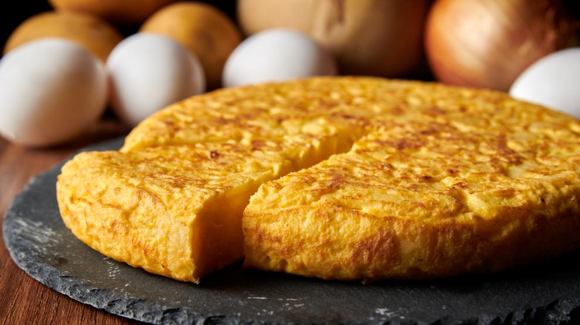

Receta de la Tortilla de Patata

Descripcion
La tortilla de patata es uno de los platos espanoles mas sabrosos.
Todo el mundo puede prepararla y solo se necesita paciencia
Ingredientes
- 4 patatas
- 6 huevos
- 1 cebolla
- Aceite de oliva
- sal
Preparacion
- Pela las patatas y cortalas en laminas
- Corta la cebolla
- Frie las patatas y la cebolla a fuego lento
- Bate los huevos y anadelos a la mezcla
- Dale la vuelta y come